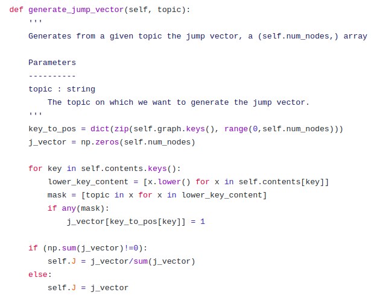
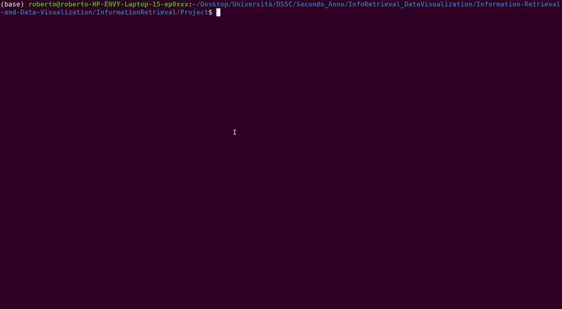

WikipediaSearch
An application of Personalized PageRank on a Wikipedia subset
Roberto Corti
What is WikipediaSearch?
WikipediaSearch is a command line user-interactive tool that computes a Personalized PageRank over a Wikipedia corpus.
Considering a set of user rankings on five specific topics, WikipediaSearch performs a ranking of the Wikipedia articles based on the user's preferences.
For this application, the Wikipedia dataset taken into account for this work is the simple Wikipedia dump of April 2007 .
1. User interaction
5-stars ranking system
Once started, WikipediaSearch will ask to the user to write 5 topics in which he/she is more interested to read and assign to each of them a rank.
The 5-stars classification is a type of rating scale commonly used in many websites to rate places and items (Google Maps, Amazon.com), with five stars being the highest rating and zero stars the lowest one.
2. Personalized PageRank
Given the 5 topics selected by the user, each one of them is assigned to a normalized weight proportional to the 5-star rank.
A topic-specific PageRank is evaluated for each topic.
The final rank is a linear combination of the topic specific Pagerank vectors using the user's weights.
3. Final Result
On results/result_[UserName][UserSurname].html will be created an HTML file with the list of the most important Wikipedia articles for the user on which he/she can jump into.

To get the Wikipedia graph
some preprocessing steps are required.
1. Filepath conversion
Every link's path must be converted into a path that starts from the root of the folder.
2. External link exclusion
Some Wikipedia pages will contain some link tags that refers to pages that are external to Wikipedia.
3. Filtering not useful pages
Inside (almost) every page there are links to Wikipedia articles related to some pages that are not an articles of the encyclopedia (help page, community portal, authors discussion, etc...).

Topic-Specific PageRank class implementation
The algorithm
The python script topicSpecificPagerank.py contains the implementation of a class used for computing the topic-specific PageRank algorithm.
The initialization of a
TopicSpecificPageRank object will require the two .json files.
generate_graph() and generate_contents() will read them and generate two python dictionaries.
generate_stochastic_matrix() will compute the stochastic matrix of the page's graph.
The Wikipedia's graph is given by 49142 nodes and 1235150 edges, which
makes the stochastic matrix unfeasible to fit into main memory
Use a Compressed Sparse Row matrix data structure through the
scipy.sparse.csr_matrix module.
compute_TopicSpecificPageRank will provide the computation of Topic-Specific Page Rank.
Three parameters:
- a
topic - teleporting probability α
- precision ε
The computation will then be:
topic this kind of PageRank will need a topic-specific jump vector. 
User class implementation
Getting user information
user.py will get user information through the
User class.
get_topic_rate is the method by which the 5-star rate of a given topic is acquired by the User class.
IR system class implementation
Getting user's best pages
IRsystem class will compute the final Pagerank vector using user'specified weight.
Two data-members: a
TopicSpecificPageRank and a User istance.
compute_weights will compute the set of weights for the set of topic specified by the user, while compute_final_pagerank function will calculate the final PageRank vector.
To write the result in a HTML file with the proper hyperlinks to the pages,
IRsystem class provides write_result method.
Based on these three classes, the code wikipediaSearch.py provides the command-line interface where the user can interact.

Impact of teleporting probability
alpha = 0.05
alpha = 0.1
alpha = 0.15
alpha = 0.2
Conclusions
WikipediaSearch reprents a basic implementation of topic-specific PageRank and it can be used in order to satisfy a user information need in a large website like Wikipedia.
Easy to use and to understand for a user.
Final PageRank computation is fast.
Keywords in
meta tag may not reflect topics in a article.
Page and content graphs construction is slow.
Possible developments
- Graph construction: speedup the computation.
- Refine the content information: some NLP algorithms can be used to extract the main topics of a page.
- User information extraction: instead of asking to the user his/her preferences, they could be extracted elsewhere (social media).
- Use of relevance feedback: given the result, the user can help to get a better ranking (adding a "static" bias to PageRank vector).
Thank you!